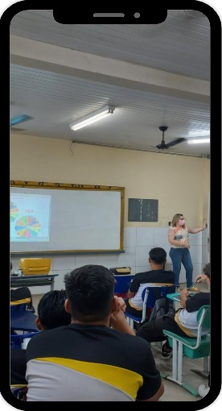
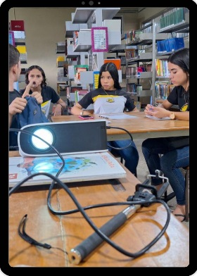
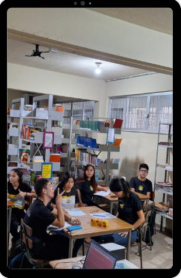
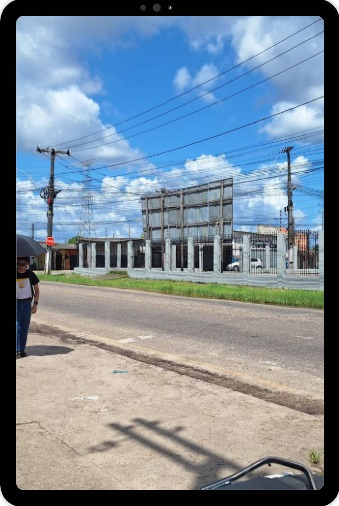
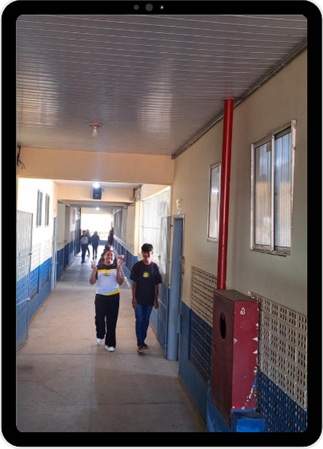

5 Detalhamento das Etapas
5.1 Organização Inicial
Objetivo: O professor apresenta a proposta, explicando que a atividade não consiste apenas em “gravar um vídeo”, mas em investigar a realidade e transformá-la em leitura crítica. Também organiza os grupos, define prazos, conversa sobre uso responsável de imagem, ética digital e finalidade pedagógica da produção.
O que os estudantes fazem: Compreendem a intencionalidade do trabalho, formam suas equipes de investigação e começam a debater possíveis temas.

5.2 Diálogos com os Alunos
Nesse momento inicial, o professor promove uma roda de conversa para ouvir os estudantes sobre questões que merecem ser discutidas. Em vez de começar pelo conteúdo pronto, inicia pela experiência vivida pelos alunos.
Esse movimento aparece como um momento de aproximação e escuta, coerente com o processo educativo dialógico.

5.2.1 Exemplos de Perguntas Problematizadoras
- Como podemos olhar para a nosssa escola sobre outra perspectiva?
- Como podemos observar no bairro onde vivemos situações que mais icomodam as pessoas?
- Quais outras situações seriam mais importantes?
5.2.2 Exemplo de Atividade em Sala
Cada equipe escreve em um post-it ou formulário:
- um problema que observa;
- uma pergunta que gostaria de investigar;
- uma ideia de vídeo curto sobre esse problema.
5.2.3 Produto Esperado
- Mapa de interesses da turma.
5.3 Diálogos com a Realidade
Dialogar com os alunos significa incentivá-los a observar a realidade de forma mais atenta, saindo de opiniões genéricas e avançando para observações concretas.

O professor conduz uma atividade de leitura do espaço escolar ou do entorno. O importante aqui é deslocar o olhar:
- “o que vemos?”;
- “quem aparece?”;
- “quem não aparece?”;
- “que contradições existem?”.
Esse momento prepara os estudantes para observar criticamente seu contexto antes do registro audiovisual.
5.3.1 Exemplos de Perguntas Problematizadoras
- Quais situações observadas seriam mais importantes para discussão?
- Se vocês pudessem denunciar, explicar ou conscientizar sobre algo em 1 minuto, o que escolheriam?
- Qual tipo de vídeo seria mais adequado para visualização desse conteúdo educativos nas redes sociais?
5.3.2 Exemplo de temática que pode surgir
Caso o tema surgido do diálogo com a realidade seja “lixo no entorno da escola”, os alunos poderão realizar a seguinte atividade prática:
- Onde há mais lixo acumulado.
- Em quais horários isso acontece.
- Se há lixeiras suficientes.
- Quem é responsabilizado pelo problema.
- Como moradores ou estudantes percebem essa situação.
5.3.3 Sugestão de Recurso
Use uma ficha simples de observação com três colunas:
- o que vimos?
- por que isso acontece?
- que pergunta isso gera?
5.3.4 Produto Esperado
- Registro das observações relizadas e primeiras hipóteses.
5.4 Investigação da Área de Estudo
É o momento de construir o levantamento preliminar do tema escolhido de modo mais sistemático. O professor dialoga com os alunos sobre a coleta inicial de relatos, cenas, imagens e falas significativas. Trata-se da primeira etapa da investigação temática, quando ocorre o levantamento preliminar da realidade estudada.
Os estudantes definem o que querem descobrir, quem pretendem entrevistar e em quais espaços realizarão as filmagens. Conforme Freire (2023) se o seu pensar é ingênuo, será pensando o seu pensar na ação, que ele mesmo se superará. E a sua superação não se faz no ato de consumir ideias, mas no ato de produzi-las e de transformá-las na ação e na comunicação.

5.4.1 Exemplo de Temática que pode surgir do diálogo com os alunos
“As dificuldades de mobilidade que os alunos enfrentam para chegar à escola”.
5.4.2 Miniatividade Investigativa
- Qual é o problema?
- Onde ele aparece?
- Quem é afetado?
- Como ele costuma ser explicado?
- O que ainda precisamos descobrir?
5.4.3 Produto Esperado
- Um relatório inicial do tema com anotações, fotos, falas, perguntas e as respostas mais significativas.
5.5 Codificação das Experiências Sociais
É o momento de transformar situações reais em materiais de registro: fotos, áudios, vídeos, entrevistas, registros de conversas informais e cenas do cotidiano. De acordo com a concepção freiriana, a codificação consiste em registrar aspectos da realidade para que posteriormente eles possam ser analisados. Essa é a fase da captação de “retratos” da realidade, onde as equipes escolherão algumas das contradições identificadas, com as quais serão elaboradas as codificações para servir a investigação temática. Estas devem representar situações conhecidas pelos alunos cuja temática se busca, possibilitando que nelas se reconheçam.
Na medida em que representam situações existenciais, as codificações devem ser simples na sua complexidade e oferecer possibilidades plurais de análises na sua descodificação.

O professor, juntamente com os alunos, discutem as noções básicas de: - técnicas de enquadramento, plano aberto, médio e close; - captação de áudio e iluminação; - gravação vertical ou horizontal para You tube, Reels, TikTok, Shorts; - autorização de imagem em entrevistas gravadas.
5.5.1 Atividades que as equipes podem realizar
- coletar opiniões de colegas;
- registrar a chegada dos alunos;
- realizar enquetes sobre riscos identificados no trajeto;
- fotografar e filmar vias do bairro, ciclovias, faixas de pedestres e pontos de ônibus;
- registrar o trânsito no entorno da escola.
5.5.2 Exemplos de gravações
- alunos nos pontos de ônibus;
- alunos utilizando bicicletas nas ciclofaixas;
- entrevistas curtas com estudantes;
- cenas de deslocamento de pedestres;
- fala em off com dados ou reflexões.
5.5.3 Modelo de vídeo em 60 segundos
- abertura com pergunta forte;
- cenas do problema;
- fala de dois colegas;
- dado simples;
- conclusão com proposta.
5.5.4 Produto Esperado
- Banco de imagens e vídeos do grupo.
5.6 Diálogos Descodificadores
É o momento em que educandos e educadores interpretam criticamente o material produzido. No processo de descodificação os alunos explicitam sua consciência real da objetividade. Começam a perceber como atuavam ao viverem a situação analisada, chegam ao que chamamos de percepção da percepção anterior. Começam a ampliar o horizonte de percepção e cada vez mais vão ampliando a sua visão sobre as relações entre uma dimensão e outra da realidade.
Essa é uma etapa decisiva. O professor exibe os registros e conduz a análise coletiva através das seguintes perguntas: - o que o vídeo mostra? - o que ele esconde? - que contradições aparecem? - que causas estruturais podem estar por trás?
Essa etapa permite sair da aparência imediata e avançar para uma consciência mais crítica.
5.6.1 Exemplos para perguntas de Descodificação:
- O que aparece com mais força nas imagens?
- Qual problema social está sendo revelado?
- Isso é um caso isolado ou algo que ocorre com frequência?
5.6.2 Exemplos para Problematização
Caso a codificação tenha sido sobre os alunos no trânsito, podemos trazer as seguintes questões para descodificação: - Os problemas no trânsito são apenas consequência da imprudência de condutores? - Quais riscos os estudantes identificam no trajeto até a escola? - As vias do bairro são seguras e bem sinalizadas? - Quem é responsável pelo trânsito no município?
5.6.3 Produto Esperado
- Uma síntese crítica do tema em cinco a oito frases.
Caso o tema fosse a merenda escolar, após observar os registros codificados, a turma poderia discutir:
- o problema é quantidade, qualidade ou organização escolar?;
- os estudantes apenas reclamam ou conseguem analisar melhor a questão?;
- o vídeo está culpando indivíduos específicos ou analisando um problema estrutural?;
- como apresentar o problema com responsabilidade?
5.7 Redução Temática
A finalidade é delimitar o núcleo fundamental do vídeo para que ele se torne claro, coerente e pedagogicamente significativo.
Após a discussão, o professor auxilia os estudantes a definir qual aspecto do problema será abordado. Nessa etapa, o tema investigado é recortado para ganhar forma de aprendizagem.
5.7.1 Sugestão de perguntas para Redução Temática
- Quem ganha e quem perde com essa situação?
- Como escola, a comunidade e o poder público aparecem nesse contexto?
- O vídeo contribui para reflexão crítica coletiva?
5.7.2 Exemplo de Temáticas significativas reduzidas que podem surgir:
- Identificação dos riscos no trânsito de alunos no trajeto casa-escola
- O trânsito, em condições seguras, como um direito das pessoas e dever dos órgãos e entidades da administração pública.
- Cobrança dos Órgãos de trânsito para a execução de programas, projetos e serviços que garantam o direito do exercício ao trânsito seguro, conforme as leis do país.
Cada grupo completa a frase:
“Nosso vídeo vai mostrar que __________, porque observamos __________, e queremos que o público reflita sobre __________.”
5.7.3 Produto Esperado
- Tema final com a mensagem central do vídeo.
5.8 Desenvolvimento em Sala de Aula
É a etapa de roteirização, edição e finalização do material audiovisual.
Nesse momento, o conteúdo investigado é confeccionado em material didático.
5.8.1 Exemplos de estrutura para vídeo curto
5.8.1.1 Modelo 1 — Vídeo curto explicativo 60 segundos
- gancho inicial: “Você já percebeu que…?”;
- apresentação do problema;
- imagens do cotidiano;
- falas ou dados curtos;
- análise crítica.
5.8.2 Exemplo Prático
Tema: “Lixo no Bairro”
Roteiro em 60 segundos: - 0–5s: imagem do problema e pergunta; - 5–20s: cenas do entorno; - 20–35s: fala de morador ou estudante; - 35–50s: interpretação do grupo; - 50–60s: proposta de reflexão ou ação.
5.8.2.1 Modelo 2 — Minidocumentário Curto 3 a 5 minutos
- cena inicial de impacto;
- narração breve;
- entrevista curta;
- contraste entre falas e imagens.
5.8.3 Exemplo Prático
Tema: “Saúde mental na escola”.
Possíveis recortes:
- 0-1m: Imagens com legendas que desmonstrem a pressão por desempenho de professores e alunos;
- 1-2m: Imagens que representem o excesso de tarefas colocados aos alunos com fundo musical;
- 2-3m: Cenas de alunos na escola representando a falta de escuta com narração;
- 3-4m: Cenas de alunos no celular para retratra o impacto das redes sociais na saúde mental;
- 4-5m: A competição por notas entre colegas de sala que influenciam no problema.
Sem depender de recursos complexos, os alunos podem utilizar editores simples de celular para:
- cortar cenas;
- inserir legendas;
- adicionar títulos;
- organizar a sequência das imagens;
- inserir trilha sonora sem prejudicar a compreensão das falas.
5.8.4 Produto Esperado
- Vídeo finalizado.
5.9 Apresentação dos Vídeos e Avaliação
É o momento de socialização das produções, reflexão sobre o processo e avaliação das aprendizagens.
Essa etapa corresponde à finalização do percurso metodológico com a apresentação dos vídeos e comentários sobre as experiências vividas.
5.9.1 Como Avaliar?
A avaliação pode considerar:
- coerência entre tema e vídeo;
- qualidade da investigação;
- capacidade de análise crítica;
- clareza da mensagem;
- organização do grupo;
- uso ético e responsável da linguagem audiovisual.
5.9.2 Exemplo de Fechamento Reflexivo
Cada equipe responde:
- O que aprendemos sobre o tema?
- O que aprendemos sobre fazer vídeo?
- Nossa produção apenas mostrou um problema ou ajudou a compreendê-lo?
- Se fôssemos publicar, que impacto gostaríamos de gerar?
5.9.3 Produto Esperado
- Exibição, autoavaliação e debate final.